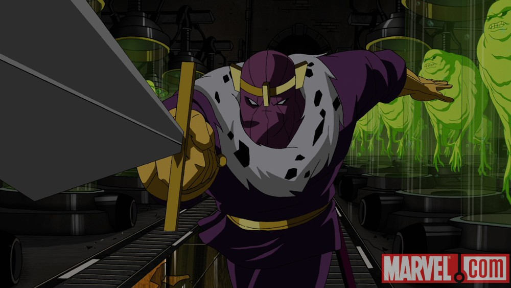

Baron Heinrich Zemo
Baron Heinrich Zemo became one of the top scientists during the Nazi reign. Scientific genius Master swordsman, marksman and hand-to-hand combatant Skilled strategist Superhuman strength, speed and agility Slowed aging Possesses the Moonstones Genius level-intellect
- he comes from marvel world
- Go to nazi party labaratory to find him
- by using the name identification we can find him
- After detecting him with name or identification marks
- attack him with help of Captain America , who has super power
- Collapse him with him of sheild and gun
- Finally saved the World ....!!!
- Happy Ending....!!!

Return_to_Index_Page